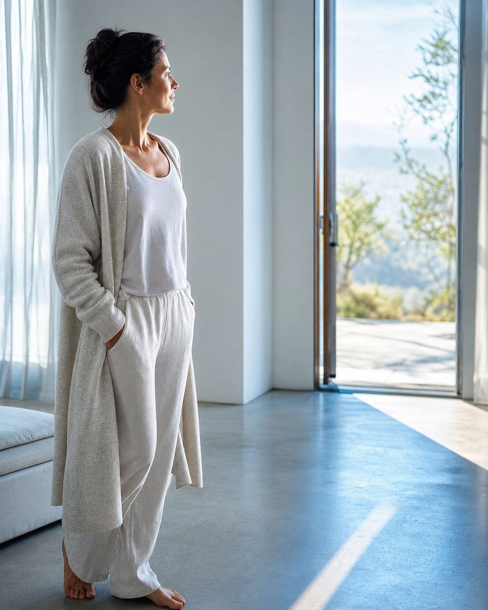

Карта направления
Путь Рейки
Это направление для тех, кому нужна не только идея изменений, а ежедневная практика опоры. Путь начинается с простого контакта через руки и постепенно ведёт к зрелости, передаче и способности держать большее поле.

Карта пути
Ступени Пути Рейки
Сначала можно понять, как устроены передача, инициация, 21 день практики и ответственность в Рейки. После этого легче выбрать практический вход: Рейки I для личной практики, следующую ступень или мастерский уровень.
метод
Метод Рейки
Страница для тех, кто хочет понять, что стоит за инициацией, 21 днями практики, ступенями, личным опытом и границами метода.
Сначала можно спокойно разобраться, почему Рейки в Evolution House устроен через передачу, практику, личный опыт и ответственность, а затем выбрать свою ступень.
первая ступень
Рейки I
Вход в личную практику через руки, инициацию и 21 день бережного применения в жизни.
Переход к личной практике, телесной опоре и способности возвращаться к себе через простое ежедневное действие.

вторая ступень
Рейки II
Символы, дистанционная практика, работа с ситуациями и более осознанная ответственность за состояние.
Переход к более тонкой ответственности за своё состояние, события и связь с людьми на расстоянии.

мастерская ступень
Мастер жизни
Следующий уровень для тех, кто готов идти глубже в практику, зрелость и внутреннюю опору.
Переход от личной практики к сборке жизни как целого и зрелой внутренней оси Мастера.

передача
Мастер-Учитель Рейки
Уровень для тех, кто готов передавать практику, обучать и держать пространство учеников.
Переход от практикующего к Мастеру, который способен передавать, обучать и держать поле учеников.

авторство
Многомерный Мастер
Глубокий уровень мастерства, тонкого видения и ответственности за форму проявления.
Переход к авторству, многомерному видению и способности создавать собственную форму передачи.
Если сначала хочется понять
Статьи о Рейки
До выбора ступени можно спокойно разобраться, как выглядит практика, что такое инициация и какой навык даёт Рейки I.

Разобраться в Рейки простым языком
Практика, инициация и первая ступень — без туманных обещаний и требования заранее во что-то поверить.
Выбрать статью →Как идти
Как понять, с чего начать
В Рейки не нужно сразу выбирать мастерский уровень. Первый вопрос проще: нужна ли вам личная практика для себя, продолжение уже после первой ступени или понимание самого метода перед решением.
Если сначала нужно разобраться
Страница метода объясняет, что стоит за инициацией, 21 днём практики, ступенями и ответственным отношением к Рейки.
Метод Рейки первый опытЕсли вы начинаете с нуля
Рейки I даёт личную практику: руки, внимание, инициация и 21 день, чтобы почувствовать опыт на себе без требования сразу идти дальше.
Рейки I продолжениеЕсли первая ступень уже пройдена
Рейки II и мастерские уровни добавляют работу с состоянием, намерением, зрелостью практики и способностью держать большее поле.
Рейки II